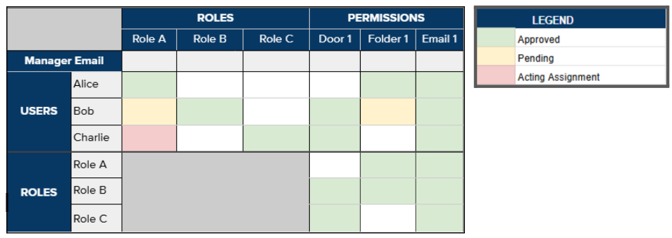
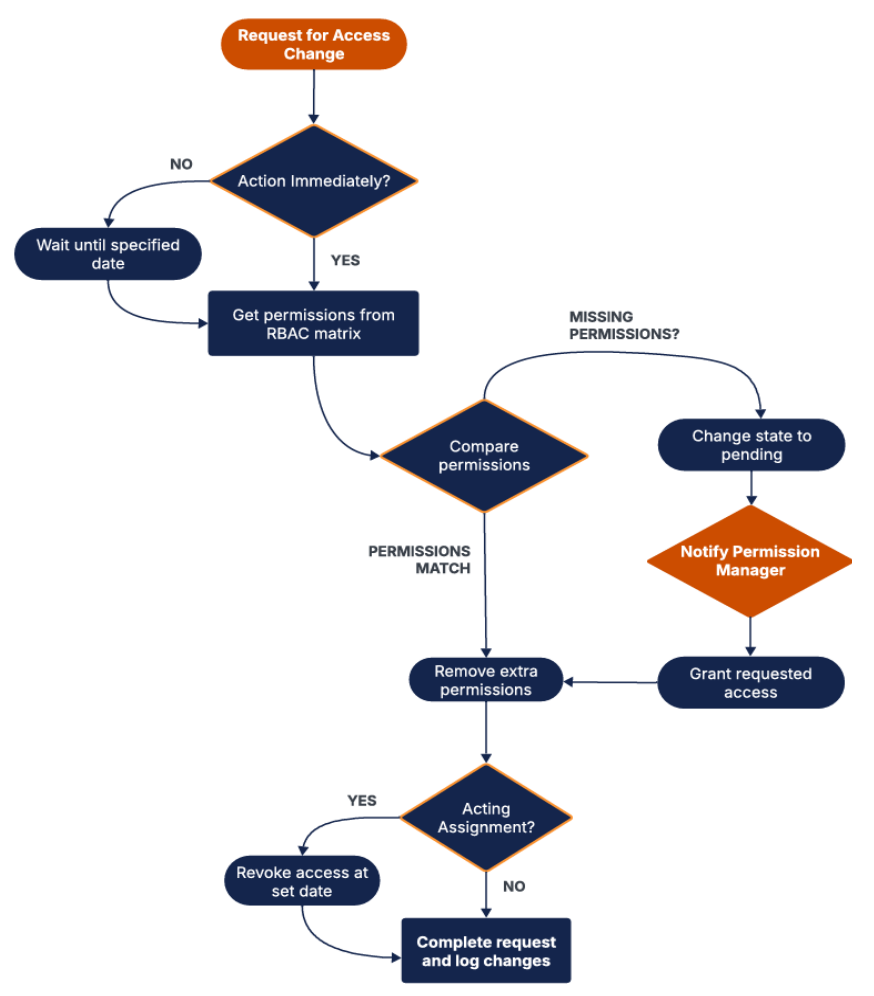

Designed a Role-Based Access Control (RBAC) framework for Toronto Paramedic Services to streamline employee access management across 1,800+ personnel and 45+ stations. The solution replaces manual processes with an automated system that ensures security compliance and reduces processing time from weeks to under 2 days.
Toronto Paramedic Services (TPS) lacked a systematic approach to manage employee access permissions across email, software applications, virtual files, and physical key-fob systems. Department managers manually tracked and updated permissions, introducing:
After evaluating three design alternatives using Pugh chart analysis, our team proposed a Role-Based Access Control (RBAC) matrix that defines permissions for each role and automates approval workflows.
<2 Days
Access Change Processing
100%
Task Effectiveness Target
2
Manual Inputs Required
1,800+
Employees Managed
Our team followed a rigorous engineering design methodology:
Generated 52 initial concepts using:
Predefined access control matrix with automated permission changes based on role transitions. Supervisor approval via email triggers updates. Temporary assignments automatically expire on specified dates.
Why we chose this: Best balance of effectiveness, efficiency, and maintainability with minimal AI-related risks.
Online interface with LLM-based risk scoring to flag suspicious access requests. Calculated urgency scores based on scheduled change dates.
Why we didn't choose this: Higher maintenance requirements and potential AI hallucination risks.
Graph database mapping user-permission relationships with dual approval (supervisor + LLM) for all changes.
Why we didn't choose this: Required 2+ manual inputs with potential escalation, less efficient than RBAC.

RBAC Matrix

Automated workflow for processing employee access changes through the RBAC matrix
Developed a Python prototype to validate the design against edge cases:
Success Criteria: 100% task completion rate across all test scenarios (per client requirement)
This project strengthened my skills in systems engineering and stakeholder management. Working with a real client from Toronto Paramedic Services taught me the importance of balancing technical feasibility with operational constraints and legal compliance.
The iterative design process, from generating 52 ideas to selecting one optimal solution, reinforced the value of structured decision-making frameworks like Pugh charts and feasibility analysis in engineering design.